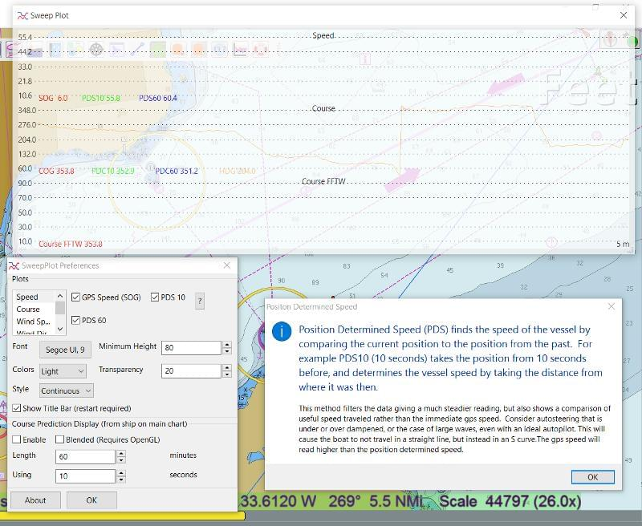
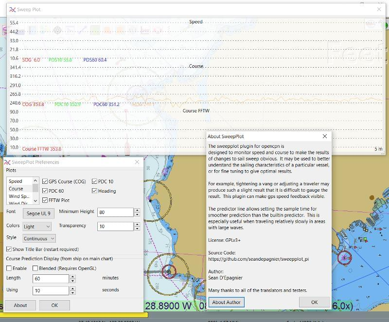

Sweep Plot Plugin is not fully implemented however the concept is to provide data in a format useful for sailing.
The top histogram is the Speed Screen which offers Speed, PDS10 (Position Determined Speed = 10 seconds) and PDS 60 (60 seconds.)

The Second histogram down is Course, offering similar values.

The other parameters for Wind are not implemented yet. This is one of Sean's plugins.